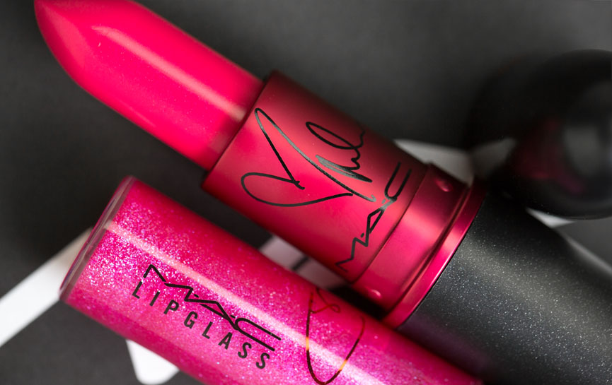
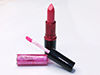
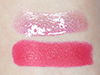
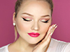
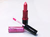
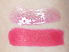
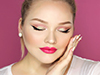

Lips Products
MAC Viva Glam x Miley Cyrus Lipstick Review & Swatches
|  |
 





|
| Move your mouse over one of the icons to see an enlarged image. |
Viva Glam Miley Cyrus Lipstick ($16.00 U.S.) (Limited Edition); is by MAC described as a hot pink. It’s a vivid, medium-dark fuchsia pink with a satin sheen. It’s very opaque, and a little bit goes a long way. The consistency is on the creamier, emollient side and glides on smoothly. This lipstick provides about 5-6 hours of wear on me and is a touch hydrating. Heads up, it did left a bright pink stain behind.
Viva Glam Miley Cyrus Lipglass ($15.00 U.S.) (Limited Edition); is by MAC described as a hot pink with sparkling pearl. It’s a sheer, super sparkly medium-dark fuchsia pink with lighter pink and aqua/teal sparkle and shimmer. The consistency is tacky, just like we’re used to with MAC. It applies very smooth and gives an instant plump effect to the lips. This lipglass provides about 2-3 hours of wear on me and is neither hydrating nor drying.
The Verdict
Together these two compliment each other so well. It’s like the lipglass just makes the lipstick that much more vibrant and intense. I love how the combination of these two gave my lips instant volume.I think MAC and Miley did good on this one. Did it shock me to see these two were joining forces?—Absolutely. But in the end they created a fun hot pink set, that I think a lot of people are going to like. It’s one of those shades that is perfect for Spring/Summer, and will surely make some heads turn (in a good way). I love how the lipstick was so opaque and creamy, it glided on so easily. The lipglass however I think could’ve gotten a little bit more attention. Other than that I think there’s nothing wrong with this set, and I’m sure it’ll sell great.